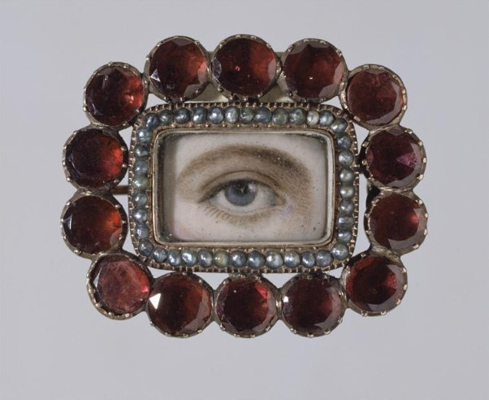

Portrait miniature d'un oeil dans une broche
Auteur: inconnu
Date: XIX
e
siècle
Dimensions: 2,8 x 3,5 cm
Matériaux: grenat
Lieu de conservation: Victoria and Albert Museum, Londres
© Victoria and Albert Museum
